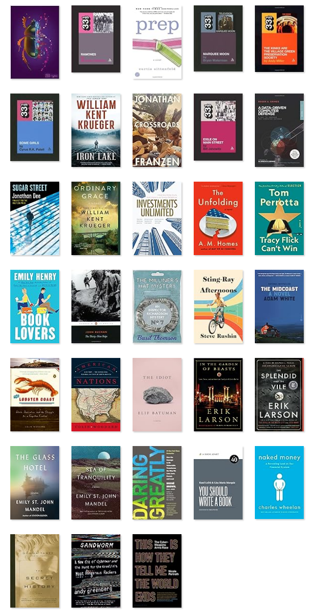
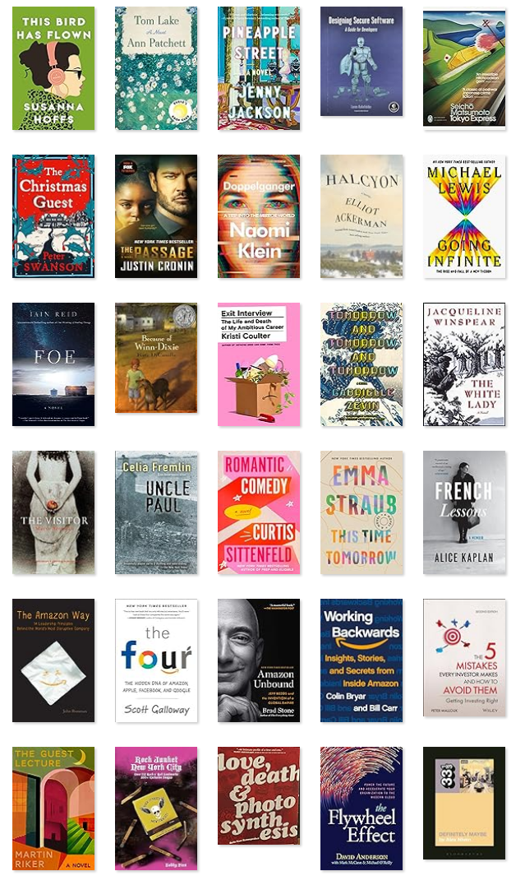

It's been awhile since I've posted anything here, which is terrible but I have reasons. 2022 and 2023 were tough years. My dad died in January of 2022, and the prior four months or so involved a lot of caregiving. Then after that, there was straightening out his affairs and his apartment. At the end of 2018, mom died, too. So that's two significant deaths, and their aftermaths, over a bit more than 3 years. These years were also dominated by acqusitions: First, Iora was aquired by One Medical in September of 2021, which brought a lot of integration work into 2022. Then in 2023, One Medical was acquired by Amazon. At Iora I had been the VP of Technology, including security and technology compliance; in July of 2022 I became the Senior Director of Information Security at One Medical. So things have been busy with a lot of changes.
As I look back on these years, it's intersting that I did manage to read 53 books in 2021, which must have been a kind of salve and distraction after mom died. Since 2021, though I read a paltry (for me) 33 and 30 books.
So I think I'm going to take this as a resolution and challenge for 2024: Read more. This is probably going to be a good year for not reading the paper and getting too caught up in politics, which I may need to do anyway, but not as a time-killer.

Dad's death made 2022 an unsteady year emotionally, and I didn't feel like reading much that was serious. Maybe that's not quite true: Apparently I read the new Franzen but I don't remember any of it. I did read a number of the 33 1/3 books on record albums, and that was a good distraction -- really comfort reading for me. I re-read some books: Curtis Sittenfeld's Prep and Donna Tartt's The Secret History. More comfort reading (though the books are not really so comforting come to think of it).
Looking back on 2022, probably the two best things I read were about the state of Maine, where my daughter is going to college. I read The Lobster Coast, a history, and The Midcoast, a novel that takes that history into account. Both highly recommended.
I also read some work-related books on security and gave 5 stars to Nicole Pelroth's This is How They Tell Me the World Ends.

I read fewer books in 2023 than in 2022! That makes me look back on 2021, 2019, and 2018 and wonder how I got so much read. The big standout for 2023 was a collection of books about Amazon: all pretty good; the one I would recommend to others is Working Backwards. I read these because the acquisition of One Medical by Amazon was finalized in February. Actually the best read about Amazon was a critique: Kristi Coulter's Exit Interview. I'd say more about this but I think as a current employee I should stay mum.
I have a list called "Books I should Stop Putting Off", all killer, no filler, and all non-fiction. If I had to pick one to move to the top of my list, it would probably be the one on Cambridge Analytica. I have noticed that when I mention Cambridge Analytica to people, they don't know what I'm talking about, and I should be at the ready for more of the story and the facts.
Maybe I need a new list of fiction that I should prioritize. Maybe this.
Here are my stats to date:
| Year | Challenge | Books Read | Pages | Length (Avg) | Rating (Avg) |
|---|---|---|---|---|---|
| 2023 | 40 | 30 | 8,574 | 285 | 3.9 |
| 2022 | 40 | 33 | 10,923 | 331 | 3.9 |
| 2021 | 53 | 53 | 14,631 | 275 | 3.9 |
| 2020 | 53 | 27 | 9,546 | 353 | 3.9 |
| 2019 | 53 | 47 | 13,798 | 293 | 4.0 |
| 2018 | 31 | 39 | 13,692 | 351 | 3.9 |
| 2017 | 26 | 34 | 10,166 | 299 | 3.9 |
| 2016 | 28 | 30 | 8,281 | 276 | 4.1 |